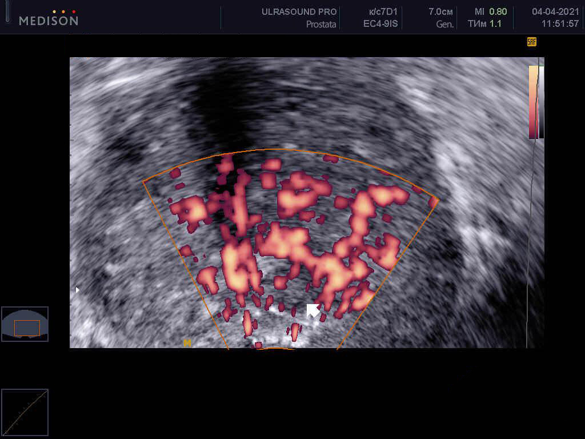

ΣΤΥΣΗ ΣΑΝ ΠΕΤΡΑ ΑΚΟΜΑ ΚΑΙ ΜΕΤΑ ΤΑ 60, ΣΥΛΛΟΓΟΣ ΑΝΔΡΟΛΟΓΩΝ ΕΧΕΙ ΞΕΚΙΝΗΣΕΙ ΠΙΛΟΤΙΚΟ ΕΡΓΟ ΓΙΑ ΤΗΝ ΠΩΛΗΣΗ ΝΕΟΥ ΠΡΟΪΟΝΤΟΣ ΠΟΥ ΕΙΝΑΙ ΑΠΟΤΕΛΕΣΜΑΤΙΚΟ ΓΙΑ ΤΗΝ ΑΠΟΚΑΤΑΣΤΑΣΗ ΠΛΗΡΗΣ ΣΕΞΟΥΑΛΙΚΗΣ ΛΕΙΤΟΥΡΓΙΑΣ.
ΣΥΝΒΟΥΛΕΥΣΗ ΜΕ ΤΟΝ ΟΥΡΟΛΟΓΟ:
Μελέτες έχουν αποδείξει πως αυτό το φάρμακο είναι 3-4 φορές πιο αποτελεσματικό από το Viagra.
ΝΑ ΜΑΘΕΤΕ ΠΩΣ ΕΙΝΑΙ ΔΥΝΑΤΟΝ ΝΑ ΛΑΒΕΤΕ ΤΟ ΠΡΟΪΟΝ A ΜΕ ΠΑΡΑΔΟΣΗ ΠΑΝΤΟΥ ΣΤΗΝ ΕΛΛΑΔΑ, διαβάστε το άρθρο.
Εισαγωγή:στο ετήσιο Ευρωπαϊκό Συνέδριο Ανδρολόγων και Σεξολόγων την άνοιξη του συνέβη ένα απίστευτο πράγμα! Το κοινό επευφημούσε για 10 λεπτά τον επιστήμονα Κωνσταντίνο Παυλίδη, έναν από τους κορυφαίους ουρολόγους στην Ελλάδα. Αυτός και μια ομάδα επιστημόνων δημιούργησαν μια μοναδική θεραπεία που μπορεί να λύσει οριστικά προβλήματα ισχύος παράγοντας ωχρινοτρόπος και ωοθυλακιοτρόπους ορμόνες που επηρεάζουν την υπόφυση.
Καθηγητής Κωνσταντίνος Παυλίδης
Χειρουργός-ουρολόγος, διδάκτωρ ιατρικών
επιστημών, καθηγητής και εφευρέτης του προϊόντος για την αποκατάσταση της ισχύος. Πέθανε αμέσως μετά τον
θρίαμβό του το .
Εργασιακή εμπειρία: 43 χρόνια.
Δυστυχώς ο ξαφνικός θάνατος του επιστήμονα δεν έδωσε την ευκαιρία να ξεκινήσει η παραγωγή της ένωσης. Μόλις τώρα έγινε από τους συνεργάτες του στο του . Το το προϊόν πέρασε τις απαραίτητες κλινικές μελέτες, τα αποτελέσματα των οποίων απέδειξαν για άλλη μια φορά την υψηλή του απόδοση: βοηθά 96 στους 100 άνδρες να ανακτήσουν πλήρως τη σεξουαλική τους δύναμη ακόμα και σε μεγάλη ηλικία.
Essendo un prodotto nazionale, l'Associazione di Andrologi ha deciso di distribuire il composto a !, Όντας εθνικό προϊόν, η Ένωση Ανδρολόγων αποφάσισε να διανείμει την ένωση σε !
73% των ανδρών γίνονται ανίκανοι μέχρι την ηλικία των 40.
Οι γιατροί μιλούν για το γεγονός ότι τα προβλήματα με την ισχύ φτάνουν στους άνδρες σε ολοένα και πιο μικρή ηλικία για τουλάχιστον δέκα χρόνια. Οι λόγοι για την πρόωρη μείωση της σεξουαλικής ισχύος είναι γνωστοί σε όλους: καθιστική ζωή, κακές συνήθειες, κακής ποιότητας διατροφή κ.λπ..
Ωστόσο, λίγοι άνθρωποι σκέφτονται τον αντίκτυπο στη σεξουαλική σφαίρα που προκαλούν τα προβλήματα της καθημερινής ζωής.
Με παρατεταμένη έλλειψη ισχύος, τα αγγεία του πέους καλύπτονται με αθηρωματικές πλάκες, οι οποίες τελικά οδηγούν στην ανάπτυξη πλήρους ανικανότητας.
Στάδια ανάπτυξης της σεξουαλικής ανικανότητας και οι συνέπειές τους
Στάδιο Α’ Η ισχύς εξαφανίζεται περιστασιακά, για παράδειγμα μετά την κατανάλωση αλκοόλ. Μερικές φορές δεν υπάρχει "διάθεση για σεξ"οι περισσότεροι άνθρωποι αποδίδουν στη σκληρή δουλειά, το άγχος κ.λπ. Ωστόσο, αυτό είναι το πρώτο σημάδι ότι θα χειροτερέψει με τον καιρό.
Στάδιο Β’Η σεξουαλική ισχύς και η όρεξη εξαφανίζονται όλο και πιο συχνά. Το πέος μπορεί να χάσει τη σφριγηλότητα κατά τη σεξουαλική επαφή ή όταν φοράει προφυλακτικό. Συνήθως, ένας άντρας κατά τη διάρκεια αυτής της περιόδου αρχίζει να σκέφτεται το πρόβλημα, αλλά συνήθως προτιμάει να αρχίζει και παίρνει απλώς κάτι σαν Viagra.
Στάδιο Γ’Η ισχύς εμφανίζεται περιστασιακά. Η λίμπιντο μειώνεται απότομα. Ο άνδρας γίνεται ευερέθιστος, η ισχύς και η επιθυμία εξαφανίζονται. Αρχίζουν τα οικογενειακά προβλήματα: συχνοί καυγάδες στην οικογένεια, προδοσία από μέρος της γυναίκας, Το ζήτημα μπορεί να οδηγήσει σε διαζύγιο.
Στάδιο Δ’Πλήρης ανικανότητα. Ακόμη και το Viagra δεν βοηθά πια, έως και το 91% των ανδρών κατά αυτό το στάδιο αισθάνονται μόνοι, οι γυναίκες σπάνια ζουν με ανικανότητα και αν το κάνουν, υποφέρουν από αυτό. Αναπτύσσεται κατάθλιψη και εμφανίζονται διάφορες σωματικές παθήσεις. Το σώμα μας είναι σχεδιασμένο έτσι ώστε η κύρια λειτουργία του να είναι η αναπαραγωγή. Μόλις χάσει την αναπαραγωγική του ικανότητα, το σώμα αρχίζει να χάνει τις δυνάμεις του πολύ γρήγορα.
Στην κατάσταση οπότε ελλείψει ισχύος η παροχή αίματος στα πυελικά όργανα μειώνεται δραματικά, γεγονός που οδηγεί στην ανάπτυξη πολυάριθμων επικίνδυνων ασθενειών.
Φωτογραφίες από το αρχείο του Ερευνητικού Ινστιτούτου Ουρολογίας. Πίσω από κάθε φωτογραφία κρύβεται μια προσωπική τραγωδία. Προσοχή, ευαίσθητο περιεχόμενο!
Καρκίνος του προστάτη σε έναν άνδρα 48 ετών.Ο καρκίνος του προστάτη είναι η πιο κοινή αιτία θανάτου (έως και το 88% των ανδρών που πάσχουν από ανικανότητα). Φαίνεται ότι οφείλεται σε έλλειψη φυσιολογικής κυκλοφορίας του αίματος στα πυελικά όργανα και πυώδης συμφόρηση στον ίδιο τον προστάτη.
+
-
Σοκαριστική φωτογραφία! Κάντε κλικ αν είστε
ενήλικος...
Γάγγραινα του πέους σε έναν άνδρα 44 ετών.Ο λόγος είναι η έλλειψη ισχύος για μεγάλο χρονικό διάστημα. Χρειάστηκε να υποβληθεί σε επείγουσα επέμβαση, αλλά αναπτύχθηκε μόλυνση του αίματος , ο άντρας είναι νεκρός.
+
-
Σοκαριστική φωτογραφία! Κάντε κλικ αν είστε
ενήλικος...
Λίθη στα νεφρά σε έναν άνδρα 41 ετών.Ένα λίθος στα νεφρά αναπτύσσεται επίσης λόγω επιδείνωσης της παροχής αίματος στα όργανα της πυέλου. Είναι μια πολύ επώδυνη ασθένεια που συχνά απαιτεί επείγουσα χειρουργική επέμβαση για την αφαίρεση των λίθων ή του ίδιου του νεφρού.
+
-Σοκαριστική φωτογραφία! Κάντε κλικ αν είστε
ενήλικος...

Λόγω του γεγονότος ότι η ισχύς μπορεί να εξαφανιστεί εντελώς, πολλοί άνδρες προσπαθούν να λύσουν προβλήματα μόλις αρχίσουν να εμφανίζονται. Ωστόσο, μέχρι πρόσφατα ήταν αδύνατο να αποκατασταθεί πλήρως η ισχύς, τα διαθέσιμα φάρμακα (για παράδειγμα το Viagra) βελτιώνουν στύση ΜΟΝΟ ΓΙΑ ΣΥΝΤΟΜΟ ΧΡΟΝΟ.
Το προϊόν που δημιούργησαν οι επιστήμονές μας, υπό την καθοδήγηση του Δρ. Κων. Κωνσταντίνου, βοηθά στη ΣΥΝΟΛΙΚΗ ΑΝΑΚΤΗΣΗ ΤΗΣ ΣΕΞΟΥΑΛΙΚΗΣ ΔΥΝΑΜΗΣ Δηλαδή το πέος επιστρέφει στη φυσιολογική του σφριγηλότητα (όπως στους υγιείς άνδρες), και δεν χρειάζεται να παίρνετε τα διεγερτικά.
Σας ζητήσαμε να μας πείτε για το νέο προϊόν που ονομάζεται στον Δρ. Μανώλη Μανωλάκη.
"Ήταν η πιο δύσκολη ΕΦΕΥΡΕΣΗ, αλλά η πιο απαραίτητη στη σύγχρονη ΟΥΡΟΛΟΓΙΑ"
Δρ.Μανώλης Μανωλάκης:
Διδάκτωρ Ιατρικών Επιστημών, Καθηγητής και
Διευθυντής του Τμήματος Ουρολογίας.
Εργασιακή εμπειρία: 10 χρόνια.
Ανταποκριτής: Κύριε Μανωλάκη, θα μπορούσατε να μας εξηγήσετε γιατί μειώνεται η ισχύς και πώς μπορεί να σταματήσει αυτή η διαδικασία;
Δρ.Μανώλης Μανωλάκης: κοιτάξτε, στη φύση το κύριο καθήκον του κάθε ατόμου είναι η αναπαραγωγή. Στον οργανισμό μας όλα διασφαλίζουν ότι αυτή η διαδικασία γίνεται χωρίς διακοπές. Ας πούμε ότι ένας άντρας έχει 3 φάσεις: πότε μεγαλώνει, πότε καταφέρνει να αναπαραχθεί και πότε αρχίζει να γεράσει. Το σώμα καταλαβαίνει σε ποια φάση βρίσκεται ανάλογα με το επίπεδο τεστοστερόνης στο αίμα. Είναι μέγιστο κατά την περίοδο της ικανότητας αναπαραγωγής, περισσότερο από 11 nmol/l. Όταν η τεστοστερόνη μειώνεται με την ηλικία, ο άνθρωπος εισέρχεται στην τρίτη φάση (περίπου μετά τα 45). Έτσι θα έπρεπε να συμβαίνει υπό κανονικές συνθήκες, αυτή είναι πράγματι η φυσική διαδικασία.
Ωστόσο, ο σύγχρονος τρόπος ζωής και το γεγονός ότι οι άνδρες ασκούνται ελάχιστα σήμερα οδηγεί στο γεγονός ότι το επίπεδο τεστοστερόνης αρχίζει να πέφτει ασυνήθιστα πρόωρα. Μετά την ηλικία των 30 ετών, το επίπεδο στο 93% των ανδρών που εξετάστηκαν κατά μέσο όρο είναι 5 nmol/l, που είναι 2 φορές χαμηλότερο από το κανονικό! Φυσικά, αυτό προκαλεί προβλήματα με την ανικανότητα και όλες οι παθήσεις που προκύπτουν από την απουσία φυσιολογικής παροχής αίματος στα όργανα της πυέλου, να εμφανίζονται πολύ πρόωρα.
Ανταποκριτής: Και πώς μπορεί να βοηθήσει στους άνδρες το ;
Δρ.Μανώλης Μανωλάκης: Είναι σημαντικό να κατανοήσουμε ότι το δεν είναι διεγερτικό, αλλά προϊόν που επανενεργοποιεί την παραγωγή τεστοστερόνης από το σώμα. Μεταξύ των επιπτώσεών του δεν υπάρχουν παθολογικές και γενικά επικίνδυνες αγγειοδιαστολές για το κυκλοφορικό σύστημα, όπως μετά το Viagra και άλλες χημικές ουσίες.
Τα ενεργά συστατικά που περιέχονται στο προάγουν την παραγωγή ωχρινοτρόπων ορμονών και διεγερτικών ωοθυλακίων που δρουν στην υπόφυση, η οποία με τη σειρά της συμβάλλει στην παραγωγή τεστοστερόνης.
Το έχει μια πολύπλοκη επίδραση στο σώμα. Τώρα δεν θέλω να μπω σε λεπτομέρειες σχετικά με τις χημικές αντιδράσεις που συμβαίνουν στο σώμα, θέλω απλώς να επισημάνω ότι το "" βελτιώνει αμέσως τη στύση μετά τη χορήγηση και βοηθά στην αποκατάσταση της λειτουργίας του αδένα της υπόφυσης, δηλαδή αποκαθιστά τη φυσική ισχύ ακόμη και σε άτομα άνω των 50-60 ετών. Με το "" μπορείτε να έχετε σταθερή ισχύ ακόμα και σε μεγάλη ηλικία.
Η τεστοστερόνη είναι εξαιρετικά χρήσιμη για τους άνδρες, άλλωστε είναι η έλλειψή της που οδηγεί στη γήρανση του οργανισμού και στην ανάπτυξη διαφόρων ασθενειών. Στο εξωτερικό, η τεστοστερόνη συνταγογραφείται σε άνδρες μετά την ηλικία των 50 ετών.
Η διαδικασία παραγωγής τεστοστερόνης από τα διάμεση ενδοκρινικά κύτταρα Leydig, στα οποία η υπόφυση δίνει το"σήμα" για την παραγωγή, επηρεάζεται από ένα προϊόν""
Ανταποκριτής: Η ομαλοποίηση της παραγωγής τεστοστερόνης είναι μια πολύ απλή λύση. Γιατί δεν το έχει σκεφτεί κανείς πριν;
Δρ.Μανώλης Μανωλάκης: σίγουρα, είναι απλό, ωστόσο δεν είναι τόσο εύκολο να επηρεαστεί αυτή η διαδικασία. Μια ουσία που μπορεί να επηρεάσει άμεσα την υπόφυση ανακαλύφθηκε από τον Δρ Γεώργο Μπαράμη και εμείς δημιουργήσαμε μια θεραπεία με βάση αυτό. Μέχρι σήμερα το –είναι η μόνη θεραπεία που καταπολεμά αποτελεσματικά την ανδρική σεξουαλική ανικανότητα. Το Viagra είναι ένα προσωρινό βοήθημα σε ένα από τα συμπτώματα , αλλά δεν θεραπεύει το ριζικό πρόβλημα. Είναι επίσης σημαντικό να επισημανθεί ότι το δεν έχει παρενέργειες, αυτό είναι που το διακρίνει μεταξύ των προϊόντων που περιέχουν σιλδεναφίλη.
Ανταποκριτής: Το έχει ελεγχθεί κλινικά; Ποια είναι τα αποτελέσματα;
Δρ.Μανώλης Μανωλάκης: Οι κλινικές μελέτες διεξήχθησαν σε διαφορετικές εγκαταστάσεις και κάθε φορά έδειχναν εκπληκτικά αποτελέσματα.
Πως μπορείτε να αποκτήσετε το "" a ;
Δρ.Μανώλης Μανωλάκης: Αυτή τη στιγμή, το Ερευνητικό Ινστιτούτο Ουρολογίας, μαζί με την Ένωση Ανδρολόγων, στο πλαίσιο του προγράμματος Ανδρική Υγεία, διανέμουν "Ανδρική Υγεία ", διανέμουν το a .
Προσωπικά πιστεύω ότι είναι μια πολύ σημαντική πρωτοβουλία, καθώς τα προβλήματα ανικανότητας εμφανίζονται όλο και πιο συχνά στους άνδρες, οδηγώντας σε καταστροφή οικογενειών, καθώς και απώλεια υγείας. Νομίζω ότι αυτή η θεραπεία θα σώσει πολλές οικογένειες και μειώστε την ποσότητα των διεγερτικών φαρμάκων που λαμβάνονται, όπως το Viagra, που κάνουν περισσότερο κακό παρά καλό.
Ανταποκριτής: Πως μπορεί κανείς να κάνει την παραγγελία του ; Τι χρειάζεται για αυτό;
Δρ.Μανώλης Μανωλάκης: Είναι πολύ απλό!!
1. Πρέπει να είστε κάτοικος
Ελλάδας.
2. Κάντε αίτηση μέσω της επίσημης φόρμας.
3. Μετά από 1-3 ημέρες (χρόνος παράδοσης),
πρέπει να πάτε στο ταχυδρομείο για να παραλάβετε το προϊόν που έχετε παραγγείλει.
Από το συντακτικό προσωπικό "Ελεύθερος Τύπος":
Προσοχή είναι Η ΤΕΛΕΥΤΑΙΑ ΗΜΕΡΑ ΕΓΓΡΑΦΗΣ ΓΙΑ το “” ! Μετά από αυτήν την ημερομηνία το προϊόν μπορεί να αγοραστεί μόνο στην αγοραία αξία!
Η ευκαιρία να επωφεληθείτε από την προσφορά που αναφέρει ο Δρ. Μανώλης Μανωλάκης ισχύει για ένα μήνα,από εώς. Αγοράστε για συμπληρώνοντας την επίσημη φόρμα αίτησης..
20 σχόλιαi
Παναγιώτης Κοβάκης
Ευχαριστώ, παρήγγειλα, το για . Ελπίζω να βοηθήσει.
πριν 35 λεπτά
Μανώκης Μάρκος
Ευχαριστώ, το πακέτο έφτασε την επόμενη μέρα. Έχω ήδη αρχίσει να το
παίρνω.
πριν μία ώρα
Άγγελος Αργύρης
Ευχαριστώ για τη συμβουλή, ήταν πολύ ενδιαφέρον! Έχω ακούσει πολλά για
το . Τώρα θα το δοκιμάσω σίγουρα!
πριν μία ώρα
Νικόλαος Γιαννάκης
Πριν από 3 ημέρες έκανα την παραγγελία του , το έλάβα χθες και το έχω δοκιμάσει
ήδη. Λειτουργεί πολύ καλά, η στύση συμβαίνει κυριολεκτικά 10 λεπτά μετά την κατάποση. Αλλά αυτό που μου
άρεσε περισσότερο είναι ότι έχει αθροιστικό αποτέλεσμα, δηλαδή όσο πιο συχνά το παίρνετε τόσο το
καλύτερο. Η πρωινή στύση επέστρεψε. Συνιστάται ανεπιφύλακτα, ειδικά σε αυτή την τιμή!!!
πριν μία ώρα
Παύλος Φερρίδης
Παίρνω το εδώ και μερικές εβδομάδες. Επιτέλους, το σεξ
επέστρεψε στη ζωή μου!: D
πριν μία ώρα
Μαργαρίτα Κυριάκου
Το παρήγγειλα για τον άντρα μου. Τα τελευταία 2 χρόνια το σεξ μετριέται
στα δάχτυλα του ενός χεριού. Δεν ξέρω πια τι να κάνω, είναι μόλις 49 ετών. Πολλές από τις φιλενάδες μου
λένε ότι πολλοί οι άντρες έχουν αυτό το πρόβλημα, ακόμα και πολύ πιο νεότεροι
πριν 2 ώρες
Νίκολας Κέιντζ
Το πήρα χθες, αποφάσισα να υποβληθώ στη θεραπεία μετά από συμβουλή
φίλου ουρολόγου.
πριν 2 ώρες
Μαξίμος Τραβάτας
Έχω ρωτήσει πολλά για το προϊόν στο επίσημο ιστότοπο. Φαίνεται υπέροχο!
πριν 3 ώρες
Βίκτωρ Βαμβάκης
Επιβεβαιώνω πλήρως! "" είναι μια εξαιρετική θεραπεία. Έχω
προβλήματα με την ανικανότητα εδώ και 3 χρόνια, πρόσφατα η λίμπιντο μου έχει επίσης πέσει δραματικά, η
γυναίκα μου ήθελε να υποβάλει αίτηση διαζυγίου. Αλλά ήδη μετά από ένα λίγες μέρες χρήσης της
προετοιμασίας όλα λειτούργησαν, υπέροχο προϊόν!
πριν 3 ώρες
Στέφανος Αμάκης
Έκανα θεραπεία με τον περασμένο μήνα για την αποκατάσταση
της πλήρους στυτικής λειτουργίας. Έχω δοκιμάσει πολλά άλλα προϊόντα στο παρελθόν, αλλά δεν με βοήθησαν
καθόλου.
πριν 3 ώρες
Αλέξανδρος Ξένος
Γειά, αυτό το προϊόν είναι εξαιρετικό! Είναι απλό στη χρήση, γρήγορο
και το κόστος του μόνο ,
έσωσε την οικογένειά μου! :) Ευχαριστώ τη Δωρεάν Εφημερίδα για τις πληροφορίες.
πριν 3 ώρες
Alex Toxic
Ευχαριστώ! Είδα μια τηλεοπτική εκπομπή για την υγεία των ανδρών και
μίλησαν για to .
Πολλοί ουρολόγοι το έχουν συστήσει
πριν 3 ώρες
Δήμητρα Καραμπάτση
Με τον άντρα μου έχουμε διαβάσει τις κριτικές και καταλαβαίνουμε ότι
χρειάζεται να το δοκιμάσουμε! Τώρα θα κάνω την παραγγελία αμέσως! Επίσης γιατί πριν αποφασίσαμε να το
πάρουμε είχαμε συμβουλευτεί και έναν ειδικό.
πριν 3 ώρες
Νίκος Αρμάδης
Το παρήγγειλα, ευχαριστώ!
πριν 4 ώρες
Αντώνιος Μαράκης
Το παρήγγειλα. Μου είπαν ότι σε 2 μέρες θα μπορούσα να το παραλάβω στο
ταχυδρομείο, δεν περίμενα τόσο γρήγορη παράδοση. Σε κάθε περίπτωση γιατί να μην το δοκιμάσεις κάτι που
κάνει μόνο .
πριν 4 ώρες
Ράνια Ραμάκη
Είπα αντίο στη στυτική δυσλειτουργία σε 3 εβδομάδες, το προτείνω σε
όλους! Είναι η μόνη θεραπεία που με έχει βοηθήσει πραγματικά.
πριν 4 ώρες
Λένα Καρνιώτη
Ευχαριστώ πολύ για το σύνδεσμο. Ο άντρας μου υποφέρει πολύ από το
γεγονός ότι δεν μπορεί να με ικανοποιήσει, για αυτό το λόγο έχει πέσει η αυτοεκτίμησή του και έχει γίνει
κραυγαλέος. Αγαπώ πολύ τον άντρα μου, Είμαι έτοιμη ακόμα και να δώσω τη ζωή μου για αυτόν, αλλά δεν ξέρω
πώς να τον βοηθήσω. Τώρα έχω παραγγείλει το ””. Μετά από δεκάδες άλλα προϊόντα που έχουμε
δοκιμάσει, ελπίζουμε πραγματικά να λειτουργήσει :)
πριν 5 ώρες
Άννα Πασκάριδου
Το παρήγγειλα για τον άντρα μου.
πριν 5 ώρες
Αλέξανδρος Μπίκας
Αυτό το προϊόν είναι πραγματικά το νούμερο ένα. Το συνιστούν όλοι!
πριν 6 ώρες